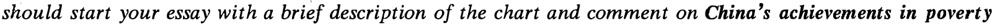
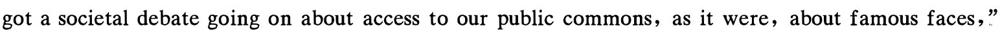

本页部分文字层异常，已保留原图文字区域；这些区域随窗口缩放，暂不能重新换行或复制。
2021 年 6 月大学英语六级考试真题（第 3 套）
Part I Writing ( 30 minutes)
Directions: For this part, you are allowed 30 minutes to write an essay based on the chart below. You

alleviation. You should write at least 150 words but no more than 200 words.
Sources: China's National Bureau of Statistics, China's State Council Leading Group Office of Poverty Alleviation and Development
Part ][ Listening Comprehension (30 minutes)
提示：2021 年 6 月六级全国只考两套听力，本套听力内容与第一二套相同，故本套未重复显示。
Part ][ Reading Comprehension ( 40 minutes)
Section A
Directions: In this section , there is a passage with ten blanks. You are required to select one word for each blank from a list of choices given in a word. bank following the passage. Read the passage through carefully before making your choices; Each choice in the bank is identified by a letter. Please mark the corresponding letter for each item on Answer Sheet 2 with. a. single line through the centre. You may not use any of the words in the bank more than once.
At 43, I've reached the stage where women are warned to watch out for the creeping sadness of middle age. We're served up an endless stream of advice on "how to survive your 40s", as if we're in the endurance stage of a slow limp toward 26 . This is the age women start to become "invisible"-our value, attractiveness and power supposedly 27 by the vanishing of youth. But I don't feel like I'm fading into 28 . I feel more seen than I ever have, and for. the first time in my life, I have a clear-eyed view of myself that is 29 , compassionate and accepting.
When I look in the mirror, I'm proud of who I am-even those "broken" parts that for so long seemed impossible to love. So when advertisers try to sell me ways to "turn back the clock", I have to
30 a laugh. I wouldn't go back to the crippling self-consciousness of my youth if you paid me. This hard-won sense of self-acceptance is one of the joys of being an older woman. But it's a narrative often
31 out by the shame that marketers rely on to peddle us their diet pills, miracle face creams and breathable yoga pants-as if self-love is a 32 commodity.
本页部分文字层异常，已保留原图文字区域；这些区域随窗口缩放，暂不能重新换行或复制。
For some women I know, this sense of trust and self-belief later in life gave them the courage to leave dysfunctional relationships or 33 on new career paths. Others talked about enjoying their own company, of growth through 34 , deepening bonds of friendships, the ability to be more compassionate, less judgmental and to listen more and appreciate the small pleasures. Life past 40 is far from smooth sailing, but it's so much more than the reductive 35 we see in women's magazines and on the Hollywood big screen.
Section B
Directions: In this section, you are going to read a passage with ten statements attached to it. Each statement contains information given in one of the paragraphs. Identify the paragraph from which the information is derived. You may choose a paragraph more than once. Each paragraph is marked with a letter. Answer the questions by marking the corresponding letter on Answer Sheet 2 .
What Are the Ethics of CGI Actors-And Will They Replace Real Ones?
A) Digital humans are coming to a screen near you. As computer-generated imagery ( CGI) has become cheaper and more sophisticated, the film industry can now convincingly recreate people on screen even actors who have been dead for decades. The technology's ability to effectively keep celebrities alive beyond the grave is raising questions about public legacies and image rights.
B) Late in 2019, it was announced that US actor James Dean, who died in 1955, will star in a Vietnam War film scheduled for release later this year. In the film, which will be called Finding Jack , Dean will be recreated on screen with CGI based on old footage and photographs, with another actor voicing him. The news was met with excitement by those keen to see Dean digitally brought back to life for only his fourth film, but it also drew sharp criticism. "This is puppeteering the dead for their fame alone," actress Zelda Williams wrote on Twitter. "It sets such an awful precedent for the future of performance." Het father, Robin Williams, who·died in 2014, was-keen to avoid the same:fate, Before his death, he filed a deed protecting the use of his image until 2039, preventing others from recreating him using CGI to appear in a film, TV show or as a hologram .
C) The James Dean film is a way to keep the actor's image relevant for younger generations, says Mark Roesler of CMG Worldwide, the firm that represents Dean's estate. "I think this is the beginning of an entire wave," says Travis Cloyd, CEO of Worldwide XR, one of the companies behind the digital recreation of Dean. "Moving into the future, we want James Dean to be brought into different gaming environments, or different virtual reality environments, or augmented reality environments," he says.
D) Other actors have been revived, with the permission of their estates, for advertising purposes: for example, a 2011 advertisement for Dior featured contemporary actress Charlize Theron alongside iconic 20th-century stars Marilyn Monroe, Grace Kelly and Marlene Dietrich. Later, Audrey Hepburn was digitally recreated for a chocolate commercial in 2013. In the same year, a CGI Bruce Lee appeared in a Chinese-language ad for a whisky brand, which offended many fans because Lee was widely known not to drink alcohol at all. "In the last five years, it's become more affordable and more achievable in a whole movie," says Tim Webber at UK visual effects firm Framestore, the company behind the Hepburn chocolate ad. Framestore used body doubles with resemblance to Hepburn's facial structure and body shape as a framework for manual animation. The process was extremely difficult and expensive, says Webber, but the technology has moved on.
本页部分文字层异常，已保留原图文字区域；这些区域随窗口缩放，暂不能重新换行或复制。
E) Now, a person can be animated from scratch. "If they're alive today, you can put them in scanning rigs, you can get every detail of their body analysed very carefully and that makes it much easier, whereas working from available photographs is tricky," says Webber, who won an Academy Award for his visual effects work on the 2013 film Gravity. "I also see a lot of actors today who will have the desire to take advantage of this technology: to have their likeness captured · and stored for future content," says Cloyd. "They foresee this being something that could give their estates and give their families the ability to make money from their likeness when they're gone."
F) A hidden hazard of digitally recreating a deceased celebrity is the risk of damaging their legacy. "We have to respect the security and the integrity of rights holders," says John Canning at Digital Domain, a US firm that created a hologram rapper (ill,nSt:.AJ·Tupac Shakur, which appeared at the Coachella music festival in 201Z, 15 years after his death.
G) Legally, a person's rights to control the commercial use of their name and image beyond their death differ between and even within countries. In certain US states, for example, these rights are treated similarly to property rights, and are transferable to a person's heirs. In California; under the Celebrities Rights Act, the personality rights for a celebrity last for 70 years after their death. "We've

says Lilian Edwards at Newcastle University, UK. Should the public be allowed to use or reproduce images of famous people, given how iconic they are? And what is in. the best interest of a deceased person's legacy may conflict with the desires of their family or the public, says Edwards.
H) A recreation, however lifelike, will never be indistinguishable from a real actor, says Webber. "When we are bringing someone back, representing someone who is no longer alive on the screen, what we are doing is extremely sophisticated digital make"".up," he says; "A performance is a lot more than a physical resemblance."
I) As it becomes easier to digitally recreate celebrities and to entirely manufacture on'."screen identities, could this kind of technology put actors out of jobs? "J think actors are worried about this," says Edwards. "But I think it will take a very long time. " This is partly because of the risk that viewers find virtual humans scary. Edwards cites widespread backlash to the digital recreation of Carrie Fisher as· a young Princess Leia in Rogue One, a trick later repeated in the recent Star Wars: The Rise of Skywalker, which was filmed after Fisher's death in 2016. "People didn't like it," she says. "They discovered the uncanny valley ."
J) This refers to the idea that when objects trying to resemble humans aren't .quite perfect, they can make viewers feel uneasy because they fall somewhere between obviously non-human and fully human. "That's always a danger when you're doing anything human or human-like," says Webber. "There're a thousand things that could go wrong with a computer-generated facial performance, and any one of those could make it fall into the uncanny valley," he says·; "Your brain j°:st knows there's something wrong." The problem often arises around the eyes or mouth, says Webber.. "They're the areas that you look at when you're talking to someone."
K) An unfamiliar digital human that has been created through CGI will also face the same challenge as an unknown actor: they don't have the appeal of an established name. "You have to spend substantial capital in creating awareness around their likeness and making sure people are familiar with who they are," says Cloyd. This is now starting to happen. "The way you pre-sell a movie in a foreign market is based on relevant talent," he says. "I think we're a long way away from having virtual beings that have the ability to pre-sell content."
L) Webber expects that we will see more digital humans on screen. "It's happening because it can happen," he says. Referring to a line from JurassicPark , he adds: "People are too busy thinking about what they c·an do to think about whether they should do it."
36. There is an ongoing debate among the public as to whether the images of deceased celebrities should be recreated.
37. The COi technology allows the image of the deceased James Dean to be presented to young people in new settings.
38. It is very likely that the COi-recreated image of a deceased celebrity will fail to match the real actor especially in facial expressions.
39. The use of digital technology can bring images of deceased celebrities back to the screen.
40. Recreating a deceased famous actor or actress may violate their legitimate rights.
41. More COi-recreated images of deceased celebrities are expected to appear on screen.
42. The image of James Dean will be recreated on screen with his voice dubbed by someone else.
43. However advanced the COi technology is, the recreated image will differ in a way from the real actor.
44. A lot of actors today are likely to make use of the COi technology to have their images stored for the benefit of their families.
45. Some actors are concerned that they may lose jobs because of the COi technology.
Section C
Directions: There are 2 passages in this section. Each passage is followed by some questions or unfinished statements. For each of them there are four choices marked A), B), C) and D). You should decide on the best choice and mark the corresponding letter on Answer Sheet 2 with a single line through the centre.
Passage One
Questions 46 to 50 are based on the foil owing passage.
You can't see it, smell it, or hear it, and people disagree on how precisely to define it, or where exactly it comes from. It isn't a school subject or an academic discipline, but it can be learned. It is a quality that is required of artists, but it is also present in the lives of scientists and entrepreneurs. All of us benefit from it and we thrive mentally and spiritually when we are able to wield it. It is a delicate thing, easily stamped out; in fact, it flourishes most fully when people are playful and childlike. Meanwhile, it works best in conjunction with deep knowledge and expertise.
This mysterious-but teachable-quality is creativity, the subject of a recently-published report by Durham· Commission on Creativity and Education; The report concludes that· creativity-should not inhabit the school curriculum only as it relates to drama, music, art and other obviously creative subjects, but that creative thinking ought to run through all of school life, infusing (jEr,ffi) the way humanities and natural sciences are learned.
The authors, who focus on education in England, off er a number of sensible recommendations, some of which are an attempt to alleviate the uninspiring and fact-based approach to education that has crept into policy in recent years. When children are regarded as vessels to be filled with facts, creativity does not prosper; nor does it when teachers' sole objective is coaching children towards exams. One suggestion from the commission is a network of teacher-led "creativity collaboratives", along the lines of existing maths hubs. (中心) , with the aim of supporting teaching for creativity through the school curriculum.
Nevertheless, it is arts subjects through which creativity can most obviously be fostered. The value placed on them by the independent education sector is clear. One only has to look at the remarkable arts facilities at Britain's top private schools to comprehend this. But in the state sector the excessive focus on English, maths and science threatens to crush arts subjects; meanwhile, reduced school budgets mean diminishing extracurricular activities. There has been a 28.1 % decline in students taking creative subjects at high schools since 2014, though happily, art and design have seen a recent increase.
This discrepancy between state and private education is a matter of social justice. It is simply wrong and unfair that most children have a fraction of the access to choirs, orchestras, art studios and drama that their more privileged peers enjoy. As lives are affected by any number of looming challenges-climate crisis, automation in the workplace-humans are going to need creative thinking more than ever. For all of our sakes, creativity in education, and for all, must become a priority.
本页部分文字层异常，已保留原图文字区域；这些区域随窗口缩放，暂不能重新换行或复制。
46. What do we learn from the passage about creativity?
47. What is the conclusion of a recently-published report?
48. What does the report say is detrimental to the fostering of creativity?
49. What do we learn about the private schools in the UK?
50. What should be done to meet the future challenges?
Passage Two
Questions 51 to 55 are based on the following passage.
Emulating your conversation partner's actions is a common human behavior classified as "mirroring" and has been known and studied by psychologists for years. We all tend to subconsciously copy gestures of people we like. But why do we act like this?
As a rule, mirroring means that conversationalists enjoy their communication and that there's a certain level of agreement between them. The topic of discussion is equally interesting for both and they know their interests meet.
Repeating someone's behavior is typical of talented communicators, not always because the person is sympathetic, but because there is a goal to be achieved. This way new idols have been brought to the stage: politicians, celebrities, and other big names. Popular culture makes people want to look popular, and act and speak like popular people.
Nowadays celebrities steal lyrics from each other and struggle with copyright violation accusations or straightforwardly claim themselves to be the authors, even though all the work was done by other people . •
Among celebrities, it's trendy nowadays to use their own speech writers as politicians do. The so-called "ghostwriting" can take various forms: books, articles, autobiographies, and even social media posts.
Who is a true copycat and who gets copycatted? Sometimes, it is a hard nut to crack without an expert's help. But new authorship defending methods based on identifying individual writing patterns are already here. Their aim is to protect intellectual property. Using scientific methods, some of them can
本页部分文字层异常，已保留原图文字区域；这些区域随窗口缩放，暂不能重新换行或复制。

51. What do people tend to do while engaging in a conversation?
52. When does mirroring usually take place in a conversation?
53. What do we learn about popular culture?
54. Why is the saying "copy from two, it's research" a lesson to learn?
55. Why does the author say imitation is rather paradoxical?
Part N Translation. ( 30 minutes)
Directions: For this part , you are allowed 30 minutes to translate a passage from Chinese into English . You should write your answer on Answer Sheet 2 .
云南是位于中国西南的一个省份,平均海拔1500米。云南历史悠久,风景秀丽,气候宜人。云南生态环境优越,生物多种多样,被誉为野生动植物的天堂。云南还有多种矿藏和充足的水资源,为全省经济的可持续发展提供了有利条件。 云南居住着25个少数民族,他们大多有自己的语言,习俗和宗教。云南独特的自然景色和丰富的民族文化使其成为中国最受欢迎的旅游目的地之,每年都吸引着大批国内外游客前往观光旅游。